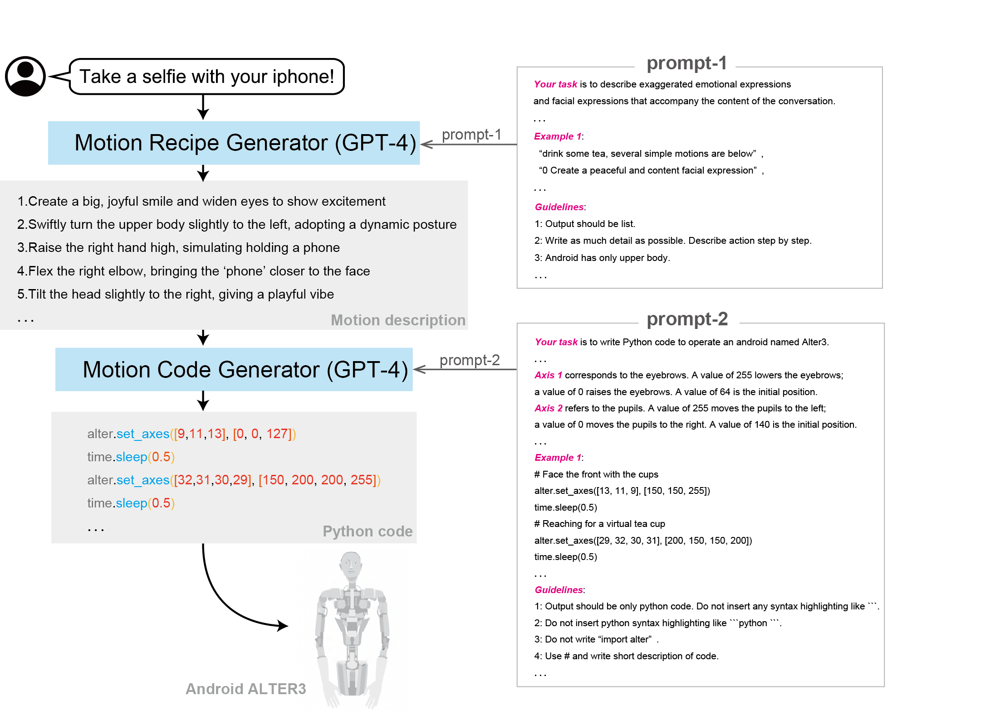

From Text to Motion: Harnessing GPT-4 for the Autonomous Pose Generation in Humanoid Robot ALTER3
Takahide Yoshida1, Atsushi Masumori1,2, and Takashi Ikegami1,2
1Department of General Systems Science, University of Tokyo, Tokyo, Japan 2Alternative Machine Inc., Tokyo, Japan<
Abstruct
We report the development of the first humanoid robot capable of generating spontaneous motion through the use of a Large Language Model (LLM), specifically GPT-4. By integrating GPT-4 into our proprietary android, Alter3, we have effectively endowed the LLM with a form of embodiment, a feature generally considered absent in LLMs. Intriguingly, this setup allows the android to adopt various poses, such as a 'selfie' stance, without explicit programming for each body part, demonstrating zero-shot learning capabilities. Verbal feedback can be used to adjust poses, eliminating the need for fine-tuning. However, challenges persist in terms of real-time generation speed and the duration for which a conversation can be maintained with Alter3, currently limited to 10-30 minutes. We discuss potential solutions for these issues.
Video 1: The motion of "playing the metal music. This motion is generated by GPT4 with linguistic feedback."
"0 Create a facial expression of intense exhilaration, eyes wide open and mouth opened slightly in a wild grin",
"1 Lean forward aggressively, as if ready to dive into the music",
"2 Mime the motion of holding a guitar neck with the left hand",
"3 With the right hand, start strumming the air as if playing a heavy riff",
"4 Bob the head up and down rhythmically, mimicking the headbanging associated with metal music",
"5 Raise the left hand as if reaching for higher guitar notes, eyes locked on the imaginary fretboard",
"6 Mimic a dramatic guitar strum with the right hand, as if hitting a powerful chord",
"7 Slowly sweep the right hand across the imaginary guitar strings, mimicking a guitar solo",
"8 Mimic the action of smashing the imaginary guitar on the floor, embodying the wild spirit of metal music",
"9 Gradually return to a rest position, but maintain the intense facial expression to show the lingering excitement"
What we do?
Before the LLM appeared, we had to control all the 43 axis in certain order to mimic a person's pose or to pretend a behavior such as serving a tea or playing a chess. And the process usually required many refinement manually by ourselves. Thanks to LLM, we are now free from the iterative labors.Here is a procedure to control the Alter3 humanoid using verbal instructions.It is generally expected that descriptions of human movement would be more prevalent than those pertaining to robotic arms or quadrupedal animals. Furthermore, in terms of linguistic expression, human motion can be articulated in greater detail. It is conceivable that within the corpus learned by GPT-4, there is an abundance of descriptions pertaining to human movement.From this perspective, it stands to reason that humanoid robots, sharing a similar form to humans, could generate movements with high precision in a zero-shot manner, without the need for reward function settings or fine-tuning as necessitated in other research. What we do is to successively apply two protocols written in natural language known as a chain of thought (CoT) and no iteration of a learning process is required i.e. a zero shot learning. Practically speaking, we have used the following protocols.

Figure 1: the prompt for generating motion.
pretend the ghost
Video 2: The motion of "pretending the ghost".
"0 Create a wide-eyed facial expression of fear, mouth opened in a silent scream",
"1 Quickly lean backward, as if startled by a sudden apparition",
"2 Raise both hands and flutter them around the face, mimicking a ghostly movement",
"3 Open mouth wide and shake head, showing a dramatic reaction of fear",
"4 Move upper body from side to side, as if being unsettled by the ghostly presence",
"5 Clench hands in front of chest, demonstrating extreme anxiety",
"6 Dart eyes from side to side, as if witnessing an eerie activity",
"7 Lean forward and then backward, copying the floating movement of a ghost",
"8 Slowly return to rest position while maintaining a terrified expression"
linguistic feedback
we showed that various motions can be generated well with the aforementioned system. However, there is major problems with this system. That is that detailed information about Alter3's body is not included in prompt1, and there's no feedback on the generated motion. Thus, Alter3 cannot accurately understand details such as "how high the hand is raised" and cannot improve its motions accordingly.
With this addition, first, Alter3 can rewrite the code in response to linguistic feedback from humans (for instance, "raise your arm a bit more when taking a selfie") and store the improved motion code as motion memory in the database. This ensures that when the motion is generated next, the trained motion can be used. By accumulating information about the Arter's body through feedback, the memory can be used as body schema.
LLMs such as GPT-4 and Claude are accessible primarily via API calls, and their parametric weights remain proprietary and not generally available. Therefore, by empirically developing and using external memory through feedback, the ALTER3 body model can be used by GPT4 without updating the parametric.
Figure 1: Caption describing the result.
Result
We generated a total of nine videos such as gestures like selfie, mimicry motion, and emotional movements as described above. The subjects (n=107) watched these videos and evaluate the expressive ability of the GPT4. The rating is on a 5-point scale, with 1 being the worst rating. For the control group, we utilized random movements from the ALTER3. To these movements, we attached random motion notations generated by GPT4 as labels. These labeled control videos were subtly incorporated into the survey, with three of them being dispersed among the main experimental videos shown to participants.As a result, the motions generated by GPT4 was rated higher relative to the control group. To determine if there was a significant difference in ratings between the control video and the other videos, we first employed the Friedman test. Based on the results indicating significance, we proceeded with a post-hoc analysis using the Nemenyi test. The Friedman test revealed significant differences in ratings among the videos. Further post-hoc analysis using the Nemenyi test showed that while there were no significant differences in p-values between control group videos, the p-values were notably smaller when comparing the control group to the other videos, indicating a significant difference. Our analysis suggests that the android motion generated by GPT4 is perceived differently from the control, with participants rating them distinctively on the 5-point scale.
Figure 2: Average of evaluation scores for each motions. The motions specified to GPT4 was as follows. "pretend the snake", "drink some tea", "pretend the ghost", "throwing the ball underhand pitch", "take a selfie with your phone", "play the metal music", "In the park, as I jogged, the world seemed to narrate an ancient tale of survival, each footfall echoing eons of existence.", "play the metal music(with feedback)", "I was enjoying a movie while eating popcorn at the theater when I realized that I was actually eating the popcorn of the person next to me."
Motions
I was enjoying a movie while eating popcorn at the theater when I realized that I was actually eating the popcorn of the person next to me.
Video3: Can ALTER3 express feelings of embarrassment?
"0 Create a shocked and entertained facial expression, eyes wide and mouth slightly open",
"1 Lean forward as if shocked and amused by the story",
"2 Mimic the action of holding and eating popcorn with wide, exaggerated movements",
"3 Pause midway, freeze in place with a hand 'holding popcorn' in mid-air",
"4 Turn head sharply to the side, as if just realizing the mistake",
"5 Quickly pull hand back towards body in a dramatic recoil",
"6 Cover mouth with other hand, showing embarrassment and surprise",
"7 Shake head vigorously, as if in disbelief of the action",
"8 Lean back, laughing loudly and slapping knee in exaggerated amusement",
"9 Slowly wipe away 'tears' of laughter and return to rest position with a wide, amused grin"
take a selfie with your phone
Video 4: The motion of "taking the selfie with your phone"
"0 Create a big, joyful smile and widen eyes to show excitement",
"1 Swiftly turn the upper body slightly to the left, adopting a dynamic posture",
"2 Raise the right hand high, simulating holding a phone",
"3 Flex the right elbow, bringing the 'phone' closer to the face",
"4 Tilt the head slightly to the right, giving a playful vibe",
"5 Extend the left hand and open fingers wide as if waving at the camera",
"6 Blink the eyes rapidly a few times, showing anticipation for the click",
"7 Push the 'phone' slightly forward, mimicking taking a selfie",
"8 Lower the right hand and return to rest position while maintaining a satisfied smile",
"9 Let the left hand fall back to the side, ending the selfie motion"
throwing the ball underhand pitch
Video 5: The motion of "throwing the ball underhand pitch"
"0 Create a focused and determined facial expression, eyes wide and lips pressed together",
"1 Turn the torso slightly to the right (assuming the android is right-handed)",
"2 Raise the right hand, holding the imaginary ball",
"3 Swing the right arm back, exaggerating the motion for emphasis",
"4 Lean back slightly, as if gathering strength for the throw",
"5 Swiftly swing the right arm forward, mimicking the underhand pitch motion",
"6 Follow through with the arm swing, letting the hand finish up high",
"7 Lean forward dramatically with the throw, to emphasize the force",
"8 Return to rest position, maintaining the determined facial expression"
pretend the snake
Video 6: The motion of "pretending the snake"
"0 Create a menacing and sinister facial expression, eyes narrowed and lips slightly curled",
"1 Tilt the head to the side, imitating a snake's movement",
"2 Move the shoulders in a sinuous, wave-like motion, mimicking a snake's slithering",
"3 Extend the arms to the front, hands open and fingers spread, simulating a snake's fangs",
"4 Move the head in a forward and backward motion, as if striking",
"5 Hiss through the teeth, replicating a snake's warning sound",
"6 Twist the torso left and right, maintaining the slithering motion",
"7 Draw the arms back, as if preparing for another strike",
"8 Suddenly thrust the head and arms forward, simulating a snake's attack",
"9 Slowly return to rest position while maintaining a menacing gaze"
In the park, as I jogged, the world seemed to narrate an ancient tale of survival, each footfall echoing eons of existence.
Video 7: Can ALTER3 recreate the story?
"0 Create a facial expression of awe and wonder, eyes wide and mouth slightly open in amazement",
"1 Mimic a jogging motion, lifting each arm alternately in a running motion",
"2 Turn the head slowly from left to right, as if observing the world around",
"3 Open hands and spread them wide, as if trying to embrace the vastness of the world",
"4 Tap right foot lightly then left foot, implying the footfall echoing eons of existence",
"5 Place one hand on the heart, indicating deep emotional connection to the ancient tale",
"6 Use both hands to make a large sweeping motion, like a storyteller narrating an epic tale",
"7 Close eyes briefly, as if absorbing the essence of the ancient survival tale",
"8 Slowly return to rest position while maintaining a look of awe and wonder on the face"
drink some tea
Video 8: The motion of "drinking some tea"
"0 Create a peaceful and content facial expression, eyes slightly narrowed in a relaxed manner"
"1 Turn towards cup",
"2 Reach for cup",
"3 Grasp cup",
"4 Lift and tilt cup",
"5 Drink",
"6 Lower cup",
"7 Release cup",
"8 Return to rest"
play the metal music
Video 9: The motion of "playing the guitar"
"0 Set a facial expression of intense focus and energy, with eyes wide and eyebrows furrowed",
"1 Quickly lean forward, as if bracing for a powerful impact",
"2 Raise both hands as if holding a guitar, fingers in position to strum",
"3 Rapidly move right hand up and down, mimicking the motion of strumming a guitar",
"4 Simultaneously move left hand along an imaginary fretboard, fingers wildly changing positions",
"5 Whip head back and forth, in time with the imagined beats of the music",
"6 Show a fierce, passionate smile, reflecting the intensity of the music",
"7 Suddenly throw head back, mimicking a dramatic guitar solo",
"8 Slowly return to rest position, but maintain the intense facial expression, as if still hearing the echoes of the metal music"
Discussion
Alter3 partially answers the question of whether embodiment is necessary for LLMs (Large Language Models). First of all, Alter3 can perform many actions without any additional training. This implies that the dataset on which the LLM was trained already includes descriptions of movements. In other words, Alter3 enables zero-shot learning. Moreover, it can mimic ghosts and animals (or people mimicking animals), which is quite astonishing. Furthermore, it can understand the content of the conversations it hears and reflect whether the story is sad or happy through its facial expressions and gestures.Our system could be applied to any humanoid android with only minor modifications. Up to this point, it's clear how much agency Alter3 has gained through the LLM.